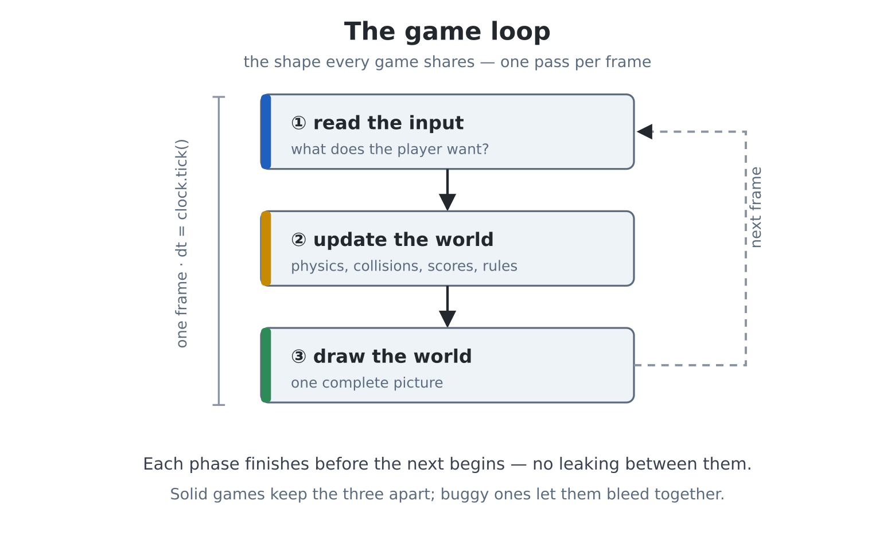
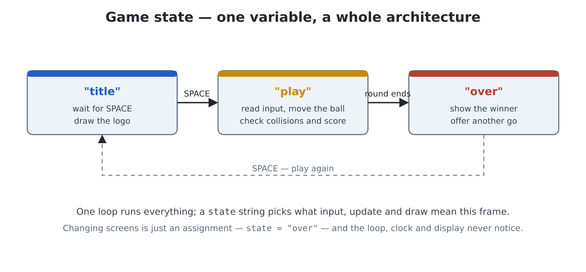

Welcome to Part IV. You can draw at sixty frames a second, keep score in files, make lasers, and read a keyboard six keys at a time — every part of a game except the game. This chapter supplies the missing organ: the shape that every game shares, from Pong to the newest thing on any console in your house. Learn the shape once and every game you ever write — including the three that follow in this Part — is a variation on it.
The chapter in advance, because this is one of the big ones:
pcgame.Clock,
dt, and why speed must be measured in per second,
never per frame.Strip any game to the skeleton and this is what remains:
forever:
read the input (what does the player want?)
update the world (physics, collisions, scores, rules)
draw the world (one complete picture)You have written this three times without the ceremony — the gallery, the island, paint. The discipline the ceremony adds: each phase completes before the next begins. Input is read once, at the top — not sampled mid-physics, where a key change could act on half the update. The world updates entirely — every ball, every paddle, every rule — before a single pixel is drawn. And drawing renders the world, never nudging it. Games with mysterious bugs are usually games where these phases leak into each other; games that feel solid are games where they don’t.
In one line: input, then update, then draw — one complete pass per frame, no leaking between phases.

Chapter 17’s vsync paced your loops at sixty a second —
as long as your frame’s work fit. But game frames vary: an explosion
here, six extra sprites there, and a heavy frame arrives late.
Two things then go wrong: motion measured per-frame slows down (the ball
crawls exactly when the action peaks), and naive timing drifts — every
late frame pushes all the following ones later, forever.
pcgame.Clock is the cure for both, and the machine’s
version has MMBasic pedigree (SYNC):
import pcgame
clock = pcgame.Clock(60) # target: 60 beats per second
while True:
# wait for the beat; dt = seconds elapsed
dt = clock.tick()
x += speed * dt # speed is now PER SECONDTwo ideas in three lines. First, the drift-free
beat: tick() waits until the next
scheduled deadline — anchored to the clock, not to when the
last frame happened to finish — so one slow frame steals from itself,
not from the future; the cadence self-heals. (clock.fps
reports the achieved rate, ready for a corner of your HUD, and
clock.reset() re-anchors after a pause menu, so the game
doesn’t try to “catch up” on frames it missed while paused.)
Second — the habit that separates games that feel right from games
that don’t — dt. tick()
returns the seconds actually elapsed (about 0.0167 at sixty). Multiply
every speed by it, and speeds become per second: a paddle
moving 300 * dt covers 300 pixels each second whether
frames come at sixty, fifty, or unevenly. Motion is promised to the
player’s clock, not the processor’s mood. Every velocity in
this Part is written per-second; do the same and your games survive
their own success.
One more gift: pcgame.Clock(vsync=True) anchors the beat
to the display’s own refresh instead of a timer — each
tick() returns just as a frame ends, which is exactly the
moment to flip chapter 17’s F buffer. That combination — tick, update,
compose, copy — is the display loop Pong uses below, and the games after
it.
In one line: dt = clock.tick() paces the loop
without drift; all speeds are per-second, multiplied by
dt.
A game is not always playing. There is a title screen,
perhaps a pause, a game-over; each reads input differently, updates
differently, draws differently. The beginner’s instinct — separate loops
for each — tangles instantly. The games answer is older and simpler:
one loop, one state variable, one
ladder:
forever:
tick
if state == "title": ...space starts the game...
elif state == "play": ...the actual game...
elif state == "over": ...show the winner, offer again...
draw whatever the state calls forChanging screens is now an assignment: state = "over".
The loop, the clock and the display machinery never notice. You met the
idea as chapter 7’s ladder and chapter 14 would happily object-ify it;
for the games in this book, a string and a ladder are exactly
enough.
In one line: one loop runs everything; a state
string picks what input/update/draw mean this frame.

Two evenings, two listings. Tonight: a court, a ball with real
timing, two paddles, and the deflection physics that made Pong
Pong. No scoring yet — a rally sandbox for two players (W/S on
the left, arrows on the right). edit("pong1.py"):
import pcgame
import keyboard
import time
def held(code):
for i in range(1, keydown(0) + 1):
if keydown(i) == code:
return True
return False
# this game is laid out for 640x480
screen(hdmi.RGB640)
time.sleep(3)
W = hdmi.width()
H = hdmi.height()
hdmi.close("F")
hdmi.create()
hdmi.write("F")
d = hdmi.fb()
BG = d.colour(0x081018)
INK = d.colour(WHITE)
PW, PH = 8, 64 # paddle size
BS = 8 # ball size
PSPEED = 320.0 # pixels per second
p1y = p2y = (H - PH) / 2
bx, by = W / 2, H / 2
bdx, bdy = 220.0, 120.0 # ball velocity, per second
clock = pcgame.Clock(vsync=True)
console("none")
try:
while not held(keyboard.ESC):
dt = clock.tick()
# --- input
if held(ord("w")):
p1y -= PSPEED * dt
if held(ord("s")):
p1y += PSPEED * dt
if held(keyboard.UP):
p2y -= PSPEED * dt
if held(keyboard.DOWN):
p2y += PSPEED * dt
p1y = max(0, min(H - PH, p1y))
p2y = max(0, min(H - PH, p2y))
# --- update
bx += bdx * dt
by += bdy * dt
# top and bottom walls
if by < 0 or by > H - BS:
by = max(0, min(H - BS, by))
bdy = -bdy
beep(440, 15)
# side walls (for now!)
if bx < 0 or bx > W - BS:
bx = max(0, min(W - BS, bx))
bdx = -bdx
beep(440, 15)
# paddle faces: deflect, and steer by where the ball
# struck
if (bdx < 0 and 16 <= bx <= 16 + PW
and p1y - BS < by < p1y + PH):
bdx = -bdx
bdy = 260 * ((by + BS / 2 - p1y) / PH - 0.5) * 2
beep(880, 15)
if (bdx > 0 and W - 24 - BS <= bx <= W - 16
and p2y - BS < by < p2y + PH):
bdx = -bdx
bdy = 260 * ((by + BS / 2 - p2y) / PH - 0.5) * 2
beep(880, 15)
# --- draw
d.fill(BG)
# the classic dashed net
for y in range(0, H, 24):
d.fill_rect(W // 2 - 2, y, 4, 12, INK)
d.fill_rect(16, int(p1y), PW, PH, INK)
d.fill_rect(W - 16 - PW, int(p2y), PW, PH, INK)
d.fill_rect(int(bx), int(by), BS, BS, INK)
hdmi.copy("F", "N")
finally:
hdmi.write("N")
console()Play a rally before reading on — the feel is the lesson. Then the autopsy, top to bottom:
320.0 * dt, 220.0 * dt. Positions are floats
(p1y, bx…) and only become pixels at the
moment of drawing (int(p1y)) — keep physics in real numbers
and rounding out of the simulation, or slow movement dies of
truncation.(by + BS/2 - p1y) / PH - 0.5 measures where on the
paddle the ball struck, −0.5 at the top through +0.5 at the bottom;
scaled by 2 and by 260, an edge-of-paddle strike sends the ball off at a
fierce angle while a centre strike returns it flat. One line, and
suddenly there is aiming, and therefore skill, and therefore a
game.bdx < 0 guard on each paddle test stops the ball
colliding with the same paddle twice in successive frames — the sign of
the velocity says which paddle could possibly be struck.Now the side walls stop being walls: a ball past a paddle is a
point. Add serving, a font-6 scoreboard, and the state ladder —
title, play, game over, play again. edit("pong.py"):
import pcgame
import keyboard
import random
import time
def held(code):
for i in range(1, keydown(0) + 1):
if keydown(i) == code:
return True
return False
# this game is laid out for 640x480
screen(hdmi.RGB640)
time.sleep(3)
W = hdmi.width()
H = hdmi.height()
hdmi.close("F")
hdmi.create()
hdmi.write("F")
d = hdmi.fb()
BG = d.colour(0x081018)
INK = d.colour(WHITE)
DIM = d.colour(GRAY)
PW, PH, BS = 8, 64, 8
PSPEED = 320.0
WIN = 5
def serve(direction):
"""Centre the ball, heading toward `direction` (+1 right, -1
left)."""
return (W / 2, H / 2,
direction * 220.0, random.randint(-140, 140) * 1.0)
p1y = p2y = (H - PH) / 2
bx, by, bdx, bdy = serve(1)
s1 = s2 = 0
state = "title"
clock = pcgame.Clock(vsync=True)
console("none")
try:
while not held(keyboard.ESC):
dt = clock.tick()
if state == "title":
if held(ord(" ")):
s1 = s2 = 0
bx, by, bdx, bdy = serve(1)
state = "play"
clock.reset()
elif state == "play":
if held(ord("w")):
p1y -= PSPEED * dt
if held(ord("s")):
p1y += PSPEED * dt
if held(keyboard.UP):
p2y -= PSPEED * dt
if held(keyboard.DOWN):
p2y += PSPEED * dt
p1y = max(0, min(H - PH, p1y))
p2y = max(0, min(H - PH, p2y))
bx += bdx * dt
by += bdy * dt
if by < 0 or by > H - BS:
by = max(0, min(H - BS, by))
bdy = -bdy
beep(440, 15)
if (bdx < 0 and 16 <= bx <= 16 + PW
and p1y - BS < by < p1y + PH):
# every return, faster
bdx = -bdx * 1.04
bdy = 260 * ((by + BS / 2 - p1y) / PH - 0.5) * 2
beep(880, 15)
if (bdx > 0 and W - 24 - BS <= bx <= W - 16
and p2y - BS < by < p2y + PH):
bdx = -bdx * 1.04
bdy = 260 * ((by + BS / 2 - p2y) / PH - 0.5) * 2
beep(880, 15)
# past the left edge: P2 scores
if bx < -BS:
s2 += 1
beep(220, 200)
bx, by, bdx, bdy = serve(-1) # loser receives
# past the right: P1 scores
elif bx > W:
s1 += 1
beep(220, 200)
bx, by, bdx, bdy = serve(1)
if s1 == WIN or s2 == WIN:
state = "over"
elif state == "over":
if held(ord(" ")):
state = "title"
# --- draw (every state draws the court; some add words)
d.fill(BG)
for y in range(0, H, 24):
d.fill_rect(W // 2 - 2, y, 4, 12, INK)
d.fill_rect(16, int(p1y), PW, PH, INK)
d.fill_rect(W - 16 - PW, int(p2y), PW, PH, INK)
hdmi.text(str(s1), W // 2 - 96, 24, DIM, -1, 1, 6)
hdmi.text(str(s2), W // 2 + 64, 24, DIM, -1, 1, 6)
if state == "play":
d.fill_rect(int(bx), int(by), BS, BS, INK)
elif state == "title":
hdmi.text("P O N G", W // 2 - 112, 180, INK, -1, 2, 3)
hdmi.text("W/S and UP/DOWN -- first to 5 -- SPACE to "
"start",
W // 2 - 188, 260, DIM)
elif state == "over":
champ = "PLAYER 1" if s1 == WIN else "PLAYER 2"
hdmi.text(champ + " WINS", W // 2 - 176, 180, INK, -1,
2, 3)
hdmi.text("SPACE for a rematch", W // 2 - 76, 260,
DIM)
hdmi.copy("F", "N")
finally:
hdmi.write("N")
console()That is a finished, giftable arcade game — about a hundred lines — and the additions since part one are worth naming:
clock.reset() when play
begins — the title screen’s idle frames mustn’t be “caught up”.serve() is a function because it happens three
ways (game start, either side scoring) — chapter 11’s rule of
thumb in the wild. The loser receives the serve; small mercies keep
games close.* 1.04 is the difficulty curve. Every
successful return quickens the ball a touch, so every rally escalates
toward a mistake. One constant to tune; playtest it on a human.bx < -BS, past the edge, not touching it) — a small
honesty that keeps edge bounces from becoming phantom points.Hand a second human the right-hand keys. You built this from an empty file, and every part of it — clock, phases, states, deflection — is the skeleton of chapters 23, 24 and 25.
pcgame.Clock: tick()
gives a drift-free beat and returns dt;
vsync=True anchors it to the display, fps
measures, reset() re-anchors after pauses.dt; positions are floats, pixels only at draw time.clock.fps on the screen (font 8, a corner). Then
make frames deliberately heavy — draw the net with 4-pixel steps instead
of 24 — and watch what the number does. That’s your budget gauge for
every game to come.PSPEED 250 vs 400; deflection 260 vs
380; speed-up 1.04 vs 1.10. Two minutes per change, with a human
opponent. Write down the combination your household prefers — game
design is exactly this.s2 means
misses. Ten changed lines, different game.ticks_diff, chapter 21), set both paddles to track the
ball (p1y += (by - p1y) * 0.05 each frame) and let it play
itself behind the title. Every arcade machine you ever admired did
exactly this.beeps with chapter 20’s sfx (import it!): a
synth thock for paddles (short square sweep), a duller wall
tap, a sad little slide for a point conceded. The 1972 original had
three sounds; honour them.scorelib: winners enter a name (input() is
legal on the over screen — the right philosophy for the moment!), the
hall of fame shows at the title, first to three matches takes
the crown.